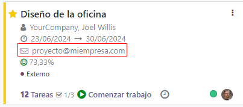

Create Project’s Tasks from an Email Alias¶
When you already have an email address that customers know from the top of their heads, changing it is the last thing you want to do. Instead, link that address to your project and transform those conversations into structured work. It automatically creates a task in the first stage of a project.
Set up an incoming email server¶
On the Settings application, enable External Email Servers and define the incoming email
alias you would like to use.
For more information: Send and receive emails in Odoo with an email server
Configure the email alias in your project¶
Now that you have the incoming email server set up, go to
. Under the Emails tab, define
the wanted email alias and choose the policy to receive a message.
In addition, you can now directly set it when creating a new project.

Important
All the recipients of the email (To/Cc/Bcc) are automatically added as followers of the task.
The email can be seen under the name of your project on the dashboard.
